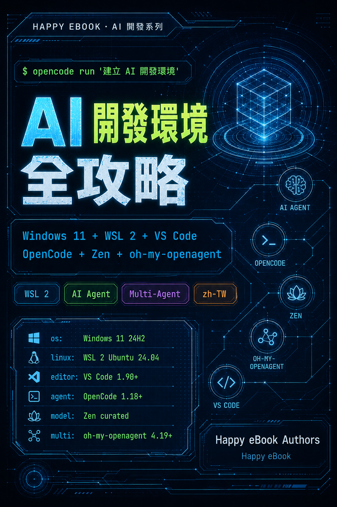

電子書
AI 開發環境全攻略
Windows 11 + WSL 2 + VS Code + OpenCode + Zen：AI Development Environment Complete Guide: Windows 11 + WSL 2 + VS Code + OpenCode + Zen

AI 開發環境全攻略
Windows 11 + WSL 2 + VS Code + OpenCode + Zen：AI Development Environment Complete Guide: Windows 11 + WSL 2 + VS Code + OpenCode + Zen
以 Windows 11 為主機，整合 WSL 2、VS Code、OpenCode 與 Zen，從安裝設定到 AI coding 日常工作流程，建立穩定、可維護的開發環境。